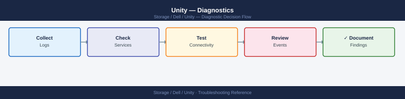

Unity — Diagnostics¶
uemcli /env/health show -filter "health.value ne OK" and active alerts with /prac/alert show, inspect SP-A and SP-B state with /env/sp show -detail, identify faulted drives and RAID rebuild progress with /stor/config/disk show, verify LUN host access with /stor/config/lunacl show, and collect the support bundle via /sys/serviceinfo collect for Dell support escalation.
*Applies to: Unity XT*

Before you begin¶
- Access: SSH or HTTPS to the Unity management IP;
uemcli -d <sp_ip> -u admin -p <password>— both SP-A and SP-B management IPs work; storage administrator role required for diagnostic commands - Gather first: the exact error message from the host or Unisphere alert, the affected component name (LUN ID, pool name, NAS server name), and both SP management IPs (run
/env/sp showif needed) - Scope: determine whether the issue is host-side (can't see LUN, network path down) or array-side (SP health, pool degraded, disk failure) —
uemcli /env/health show -filter "health.value ne OK"is the fastest initial check
Step 1 — System health and alerts¶
# System general info — name, model, serial, software version
uemcli -d <sp_ip> -u admin -p <password> /sys/general show -detail
# Show all components NOT in an OK health state — start here
uemcli -d <sp_ip> -u admin -p <password> /env/health show -filter "health.value ne OK"
# All active alerts (unresolved)
uemcli -d <sp_ip> -u admin -p <password> /prac/alert show
# Alert history — ordered by time (most recent first)
uemcli -d <sp_ip> -u admin -p <password> /prac/alert show -detail
# Filter alerts by severity
uemcli -d <sp_ip> -u admin -p <password> /prac/alert show | grep -i "critical\|error"
# System event log
uemcli -d <sp_ip> -u admin -p <password> /event/syslog show
# Audit log — administrative actions
uemcli -d <sp_ip> -u admin -p <password> /event/audit show
# Software version
uemcli -d <sp_ip> -u admin -p <password> /sys/sw/version show
System General Information:
Name: UNITY-SPA-001
Model: Unity 380
Serial Number: APM00123456789
Software Version: 5.1.0.0.5.999
Health State: Degraded
Health Status (Non-OK Components):
ID: dae_0
Health: Degraded
Component: DAE
Reason: One disk in enclosure 0 is offline
ID: disk_0_0_2
Health: Offline
Component: Disk
Reason: Disk failure detected
Active Alerts:
ID: 3847
Severity: Error
Message: Disk 0_0_2 offline in DAE 0
Timestamp: 2024-01-15 14:32:18
ID: 3848
Severity: Warning
Message: DAE 0 operating in degraded mode
Timestamp: 2024-01-15 14:32:45
Alert History (Detail):
ID: 3847
Severity: Error
State: Unresolved
Message: Disk 0_0_2 offline in DAE 0
First Occurrence: 2024-01-15 14:32:18
Last Occurrence: 2024-01-15 14:32:18
Occurrences: 1
Critical/Error Alerts:
ID: 3847 | Error | Disk 0_0_2 offline in DAE 0 | 2024-01-15 14:32:18
System Event Log:
Timestamp: 2024-01-15 14:32:18 | Event: DISK_OFFLINE | Disk 0_0_2 | Severity: Error
Timestamp: 2024-01-15 14:31:05 | Event: DAE_DEGRADED | DAE 0 | Severity: Warning
Timestamp: 2024-01-15 13:45:22 | Event: SYSTEM_BOOT | SPA | Severity: Info
Audit Log:
Timestamp: 2024-01-15 10:15:33 | User: admin | Action: LOGIN | Status: Success
Timestamp: 2024-01-15 10:16:12 | User: admin | Action: POOL_MODIFY | Target: Pool_01 | Status: Success
Software Version:
Current Version: 5.1.0.0.5.999
Build Date: 2023-12-20
Common errors
Connection refused — unable to connect to <sp_ip>:443 — Verify the SP IP address is correct and reachable with ping <sp_ip>, and ensure the management port is accessible.
Authentication failed for user admin — Confirm the password is correct and the admin account is not locked; reset credentials in Unisphere if needed.
uemcli: command not found — Install the UEMCLI package on your management host or add its installation directory to your PATH environment variable.
Alert severity reference¶
| Severity Code | Meaning | Expected Response Time |
|---|---|---|
| CRITICAL (8) | Service-impacting fault | Immediate — within minutes |
| ERROR (6) | Degraded functionality | Within the hour |
| WARNING (4) | Potential issue; non-impacting | Within the business day |
| NOTICE / INFO (2) | Informational | Review at next operational check |
Step 2 — Storage processor diagnostics¶
# Show both SP states
uemcli -d <sp_ip> -u admin -p <password> /env/sp show
# Detailed SP view — health, CPU, memory, temperature
uemcli -d <sp_ip> -u admin -p <password> /env/sp show -detail
# Check SP A specifically
uemcli -d <sp_ip> -u admin -p <password> /env/sp -id spa show -detail
# Check SP B specifically
uemcli -d <sp_ip> -u admin -p <password> /env/sp -id spb show -detail
# Battery / BBU status (protects write cache)
uemcli -d <sp_ip> -u admin -p <password> /sys/battery show -detail
# Power supply status
uemcli -d <sp_ip> -u admin -p <password> /sys/powersupply show
SP A
Health: OK
Needs Attention: false
Manufacturer: EMC
Model: SP-400F
Serial Number: APM00123456789
CPU Count: 2
Memory Size: 32 GB
Temperature: 38°C
State: Present
SP B
Health: OK
Needs Attention: false
Manufacturer: EMC
Model: SP-400F
Serial Number: APM00987654321
CPU Count: 2
Memory Size: 32 GB
Temperature: 41°C
State: Present
Battery 0
Health: OK
State: Present
Charge Level: 100%
Capacity: 100%
Estimated Runtime: 4 hours 32 minutes
Power Supply 0
Health: OK
State: Present
Output Power: 850 W
Input Voltage: 240 V AC
Power Supply 1
Health: OK
State: Present
Output Power: 850 W
Input Voltage: 240 V AC
Common errors
The specified SP could not be found. — Verify the SP IP address is correct and reachable with ping <sp_ip>.
Authentication failed: Invalid username or password — Confirm admin credentials are correct and the account has not been locked after failed login attempts.
Connection timeout: Unable to reach management interface — Check network connectivity to the SP and ensure the management port (port 443) is not blocked by firewall rules.
Step 3 — Storage pool and disk diagnostics¶
# All pools with capacity and health
uemcli -d <sp_ip> -u admin -p <password> /stor/config/pool show -detail
# Specific pool detail
uemcli -d <sp_ip> -u admin -p <password> /stor/config/pool -id <pool_id> show -detail
# All disk groups (RAID sets) in pools
uemcli -d <sp_ip> -u admin -p <password> /stor/config/dg show -detail
# All drives — health, location, type
uemcli -d <sp_ip> -u admin -p <password> /stor/config/disk show -detail
# Flag any non-healthy drives
uemcli -d <sp_ip> -u admin -p <password> /stor/config/disk show -detail | \
grep -v -E "Normal|Health State|---"
# FAST Cache status
uemcli -d <sp_ip> -u admin -p <password> /stor/config/fastcache show -detail
ID Name Type Size Free Health State
==================================================================================================
pool_1 Production_Pool RAID 5 10.7 TB 3.2 TB OK
pool_2 Archive_Pool RAID 6 21.4 TB 8.9 TB OK
pool_3 Backup_Pool RAID 5 5.4 TB 1.1 TB Degraded
ID Name Raid Type Stripe Length Size Free Health State Status
==================================================================================================
pool_2 Archive_Pool RAID 6 8 21.4 TB 8.9 TB OK Ready
ID Raid Type Size Free Health State Disks Status
==================================================================================================
dg_1 RAID 5 10.7 TB 3.2 TB OK 14 Ready
dg_2 RAID 6 21.4 TB 8.9 TB OK 18 Ready
dg_3 RAID 5 5.4 TB 1.1 TB Degraded 14 Rebuilding
Slot Disk ID Type Size Health State Pool Status
==================================================================================================
0.0 DPE_DISK_0 SAS 10K 600 GB Normal pool_1 Ready
0.1 DPE_DISK_1 SAS 10K 600 GB Normal pool_1 Ready
0.2 DPE_DISK_2 SAS 10K 600 GB Predictive_Failure pool_1 Rebuilding
0.3 DPE_DISK_3 SAS 10K 600 GB Normal pool_2 Ready
0.4 DPE_DISK_4 SAS 10K 600 GB Normal pool_2 Ready
Slot Disk ID Type Size Health State Pool Status
==================================================================================================
0.2 DPE_DISK_2 SAS 10K 600 GB Predictive_Failure pool_1 Rebuilding
Enabled Read_Hit_Rate Write_Hit_Rate Size Health State Status
==================================================================================================
Yes 78.4% 65.2% 3.2 TB OK Ready
Common errors
Connection failed: Authentication error — Verify the SP IP address is correct and admin credentials are valid with uemcli -d <sp_ip> -u admin -p <password> /sys show.
Command not found: uemcli — Install the EMC Unity CLI package or ensure the uemcli binary is in your system PATH.
Error: Invalid pool ID '<pool_id>' — Confirm the pool ID exists by running the first command to list all pools and their IDs.
RAID rebuild status¶
When a drive is replaced, Unity begins a RAID rebuild automatically. Monitor rebuild progress:
# Disk group health shows "Rebuilding" or "Degraded" during rebuild
uemcli -d <sp_ip> -u admin -p <password> /stor/config/dg show -detail | \
grep -E "Health|Remaining"
# Pool health transitions from Degraded back to OK after rebuild completes
uemcli -d <sp_ip> -u admin -p <password> /stor/config/pool show -detail | \
grep -E "Name|Health"
Health: OK
Remaining Time: 2 days 14 hours 23 minutes
Remaining Capacity: 847.3 GB
Name: pool_01
Health: Degraded
Name: pool_02
Health: OK
Name: pool_03
Health: Rebuilding
Common errors
Error: Connection refused (Connection refused) — Verify the SP IP address is correct and reachable with ping <sp_ip>, and confirm the management interface is online.
Error: Authentication failed — Confirm the admin credentials are correct and the user account has not been locked after failed login attempts; reset the password if needed.
Error: Command not found: uemcli — Install the EMC CLI tools or add the installation directory to your PATH environment variable.
Do not expand a pool, add disk groups, or perform OE upgrades while a RAID rebuild is in progress. Allow the rebuild to complete before making further changes.
Step 4 — LUN diagnostics¶
# List all LUNs with health and capacity
uemcli -d <sp_ip> -u admin -p <password> /stor/config/lun show -detail
# Specific LUN
uemcli -d <sp_ip> -u admin -p <password> /stor/config/lun -id <lun_id> show -detail
# LUN access control — which hosts have access?
uemcli -d <sp_ip> -u admin -p <password> /stor/config/lunacl show
# Filter access for a specific LUN
uemcli -d <sp_ip> -u admin -p <password> /stor/config/lunacl show | grep <lun_id>
# Snapshots for a specific LUN
uemcli -d <sp_ip> -u admin -p <password> /prot/snap show -res <lun_id>
LUN ID Name Health Capacity Allocated State
lun_0 prod-db-01 OK 1.0 TB 856.2 GB Ready
lun_1 prod-db-02 OK 2.0 TB 1.8 TB Ready
lun_2 backup-tier-01 OK 5.0 TB 3.2 TB Ready
lun_3 dev-test-lun Degraded 500.0 GB 450.1 GB Ready
lun_4 archive-cold OK 10.0 TB 7.5 TB Ready
...
LUN ID: lun_0
Name: prod-db-01
Health: OK
Capacity: 1.0 TB
Allocated: 856.2 GB
Thin Provisioned: Yes
Snapshots: 3
Access Control: 4 hosts
LUN ID Host Name Access Type Initiator Type
lun_0 esx-host-01.lab Read/Write iSCSI
lun_0 esx-host-02.lab Read/Write iSCSI
lun_1 db-server-03.prod Read/Write Fibre Channel
lun_2 backup-client-01 Read/Write iSCSI
lun_3 dev-vm-cluster Read/Write iSCSI
...
lun_0 esx-host-01.lab Read/Write iSCSI
lun_0 esx-host-02.lab Read/Write iSCSI
Snapshot ID Source LUN Created Size State
snap_lun0_20240115 lun_0 2024-01-15 14:32 45.6 GB Ready
snap_lun0_20240114 lun_0 2024-01-14 22:15 42.1 GB Ready
snap_lun0_20240113 lun_0 2024-01-13 18:47 38.9 GB Ready
Common errors
Authentication failed. Invalid credentials. — Verify the SP IP address is correct and admin password is current; reset credentials in Unisphere if needed.
The specified LUN ID <lun_id> does not exist. — Confirm the LUN ID exists by running the list command without filters first.
Connection timeout: Unable to reach <sp_ip>. — Ensure the storage processor IP is reachable and the management network is configured; test with ping <sp_ip>.
Step 5 — NAS and file system diagnostics¶
# NAS servers — health and SP assignment
uemcli -d <sp_ip> -u admin -p <password> /nas/server show -detail
# File interfaces (IPs for NAS access)
uemcli -d <sp_ip> -u admin -p <password> /net/nas/if show -detail
# Active NFS exports and their access configuration
uemcli -d <sp_ip> -u admin -p <password> /prot/nfs show -detail
# Active SMB shares
uemcli -d <sp_ip> -u admin -p <password> /prot/smb show -detail
# Active NFS sessions (connected NFS clients)
uemcli -d <sp_ip> -u admin -p <password> /prot/nfs/session show
# Active SMB sessions (connected SMB clients)
uemcli -d <sp_ip> -u admin -p <password> /prot/smb/session show
# AD join status for a NAS server
uemcli -d <sp_ip> -u admin -p <password> /nas/ad show -detail
# File system list with capacity
uemcli -d <sp_ip> -u admin -p <password> /stor/config/fs show -detail
NAS Server: "nas_server_01"
Health: OK
SP Owner: SPA
Replication Role: Source
Multi-Protocol: Enabled
File Interface: "nas_cifs_if"
IP Address: 192.168.10.45
Netmask: 255.255.255.0
Gateway: 192.168.10.1
Status: Linked
NFS Export: "/export/data"
File System: fs_data_01
Access: 192.168.10.0/24 (RW), 10.0.0.0/8 (RO)
Root Squash: Enabled
SMB Share: "shared_folder"
File System: fs_data_01
Continuous Availability: Enabled
ABE: Disabled
NFS Session: 3 active
Client: 192.168.10.102, Mount: /export/data, Operations: 1247
SMB Session: 5 active
Client: 192.168.10.50, User: DOMAIN\jsmith, Idle: 45s
AD Join Status: "nas_server_01"
Domain: corp.internal
Status: Joined
Last Sync: 2024-01-15 14:32:18
File System: "fs_data_01"
Size: 2.0 TB
Used: 1.3 TB
Available: 700 GB
Thin Provisioned: Yes
Common errors
Error: The specified Storage Processor is not reachable — Verify the SP IP address is correct and the management network is accessible from your admin host.
Error: Authentication failed for user 'admin' — Confirm the password is correct and the admin account has not been locked due to failed login attempts.
Error: Object not found: /prot/nfs/session — Ensure NFS protocol is licensed and enabled on the array; if no NFS exports exist, this command will return empty results.
Step 6 — Network interface diagnostics¶
# All network interfaces (management, iSCSI, NAS)
uemcli -d <sp_ip> -u admin -p <password> /net/if show -detail
# Physical Ethernet ports and their link state
uemcli -d <sp_ip> -u admin -p <password> /net/port/eth show -detail
# FC ports and their state
uemcli -d <sp_ip> -u admin -p <password> /net/port/fc show -detail
# iSCSI nodes and targets
uemcli -d <sp_ip> -u admin -p <password> /net/iscsi/node show -detail
# DNS configuration
uemcli -d <sp_ip> -u admin -p <password> /sys/dns show
# NTP configuration and sync status
uemcli -d <sp_ip> -u admin -p <password> /sys/ntp show
ID Name IPv4Address IPv6Address Netmask Gateway
==============================================================================================================================================
eth0 Management 192.168.1.50 ::1 255.255.255.0 192.168.1.1
eth1 iSCSI-A 10.20.30.100 ::1 255.255.255.0 10.20.30.1
eth2 iSCSI-B 10.20.31.100 ::1 255.255.255.0 10.20.31.1
eth3 NAS 172.16.50.50 ::1 255.255.255.0 172.16.50.1
Port LinkState Speed Duplex
==============================================================================================================================================
SP A Port 0 Up 1 Gbps Full
SP A Port 1 Up 1 Gbps Full
SP B Port 0 Up 1 Gbps Full
SP B Port 1 Down Unknown Unknown
Port State Speed WWN
==============================================================================================================================================
SP A FC Port 0 Online 8 Gbps 50:00:14:40:5a:2b:c1:a0
SP A FC Port 1 Online 8 Gbps 50:00:14:40:5a:2b:c1:a1
SP B FC Port 0 Online 8 Gbps 50:00:14:40:5a:2b:c1:b0
SP B FC Port 1 Offline Unknown 50:00:14:40:5a:2b:c1:b1
Node Alias State IP Address
==============================================================================================================================================
iqn.1991-05.com.dell:01:5a2bc1a0 Unity-SPA-Node-0 Enabled 10.20.30.100
iqn.1991-05.com.dell:01:5a2bc1b0 Unity-SPB-Node-0 Enabled 10.20.31.100
DNS Servers: 8.8.8.8, 8.8.4.4
Search Domains: corp.local, backup.local
NTP Servers: ntp.corp.local (192.168.1.10), pool.ntp.org
NTP Status: Synchronized
Last Sync: 2024-01-15 14:32:18 UTC
Stratum: 2
Common errors
Authentication failed. Verify credentials and SP IP address. — Confirm the SP IP address is reachable and admin credentials are correct by testing with ping <sp_ip> first.
Command not found: uemcli — Install the EMC Unity CLI package or add its installation directory to your PATH environment variable.
Connection timeout after 30 seconds — Verify network connectivity to the SP management interface and ensure the storage processor is powered on and responsive.
Step 7 — Replication diagnostics¶
# All replication sessions with state and lag
uemcli -d <sp_ip> -u admin -p <password> /prot/rep/session show
# Detailed session view — includes current lag, last sync time, error details
uemcli -d <sp_ip> -u admin -p <password> /prot/rep/session show -detail
# Specific session
uemcli -d <sp_ip> -u admin -p <password> /prot/rep/session -id <session_id> show -detail
# Replication connections to remote arrays
uemcli -d <sp_ip> -u admin -p <password> /prot/rep/connect show
# Test replication connection (verify the destination array is reachable)
uemcli -d <sp_ip> -u admin -p <password> /prot/rep/connect -id <conn_id> verify
ID State Lag(sec) Last_Sync_Time
rep_session_001 Synchronized 0 2024-01-15 14:32:18
rep_session_002 Synchronizing 45 2024-01-15 14:31:33
rep_session_003 Paused 892 2024-01-15 14:15:22
rep_session_004 Failed N/A 2024-01-15 13:58:07
ID State Lag(sec) Last_Sync_Time Error_Details
rep_session_002 Synchronizing 47 2024-01-15 14:31:33 None
Source_LUN: lun_123, Destination_LUN: lun_456
Replication_Type: Synchronous, Bandwidth_Limit: Unlimited
Last_Error: None, Error_Count: 0
ID State Lag(sec) Last_Sync_Time Error_Details
rep_session_004 Failed N/A 2024-01-15 13:58:07 Connection timeout to destination array
Source_LUN: lun_789, Destination_LUN: lun_012
Replication_Type: Asynchronous, Bandwidth_Limit: 100 MB/s
Last_Error: Network unreachable, Error_Count: 3
ID Local_IP Remote_IP Status Last_Test_Time
conn_rep_001 192.168.1.50 192.168.2.100 Connected 2024-01-15 14:30:45
conn_rep_002 192.168.1.51 192.168.2.101 Disconnected 2024-01-15 13:45:22
conn_rep_003 192.168.1.50 192.168.2.102 Connected 2024-01-15 14:28:10
Connection conn_rep_001 verification: PASSED
Round-trip latency: 2.3 ms
Bandwidth available: 950 Mbps
Last verified: 2024-01-15 14:35:12
Common errors
Error: Connection refused to <sp_ip>:443 — Verify the SP IP address is correct, the array is powered on, and network connectivity exists from your management station.
Error: Authentication failed for user 'admin' — Confirm the password is correct and the admin account is not locked; reset credentials in Unisphere if needed.
Error: Session rep_session_004 not found — Check the session ID spelling and verify the session exists with the first show command before querying specific sessions.
Step 8 — Performance diagnostics¶
Unity provides real-time and historical performance metrics via the REST API and Unisphere dashboards. UEMCLI provides limited real-time metrics.
# Real-time system performance metrics (polling interval in seconds)
uemcli -d <sp_ip> -u admin -p <password> /metrics/value/rt show \
-interval 5
# Show available real-time metrics
uemcli -d <sp_ip> -u admin -p <password> /metrics/rt show
# Historical performance — use Unisphere GUI: System > Performance
# Or pull via REST API:
# GET https://<sp-ip>/api/types/metricRealTimeQuery/instances
Real-time system performance metrics (polling interval 5 seconds):
Timestamp CPU Usage Memory Usage Read IOPS Write IOPS Latency(ms)
2024-01-15 14:23:45 UTC 42.3% 68.5% 12847 8934 2.1
2024-01-15 14:23:50 UTC 45.1% 69.2% 13102 9156 2.3
2024-01-15 14:23:55 UTC 41.8% 67.9% 12654 8812 2.0
2024-01-15 14:24:00 UTC 48.6% 70.1% 13456 9423 2.5
Available real-time metrics:
- cpu.utilization.avg
- memory.utilization.avg
- disk.reads.iops
- disk.writes.iops
- disk.latency.avg
- cache.hit.ratio
- network.throughput.mbps
- pool.capacity.used.percent
Common errors
Authentication failed for user 'admin' on <sp_ip> — Verify the storage processor IP address is reachable and credentials are correct with ping <sp_ip> and confirm password has no special characters requiring escaping.
Connection timeout connecting to <sp_ip>:443 — Ensure the management network interface on the storage processor is configured and the firewall allows HTTPS (port 443) from your management host.
Metric 'cpu.utilization.avg' not available on this system — Confirm the Unity system firmware supports real-time metrics collection; older firmware versions may require a REST API call instead of uemcli.
For sustained performance investigation, use the Unisphere Performance dashboard to identify:
- Peak I/O periods.
- Latency distribution across LUNs and pools.
- Cache hit rate (FAST Cache and DRAM write cache).
- SP CPU and memory utilisation.
Step 9 — Support bundle collection¶
# Trigger support bundle collection from CLI
uemcli -d <sp_ip> -u admin -p <password> /sys/serviceinfo collect
# Check collection status
uemcli -d <sp_ip> -u admin -p <password> /sys/serviceinfo show
Collection request submitted successfully.
Collection ID: 12345
Status: In Progress
Estimated time remaining: 8 minutes
Collection ID: 12345
Status: Completed
Size: 2.3 GB
Location: /var/log/emc/support/bundle_12345.tar.gz
Created: 2024-01-15 14:32:18
Expiration: 2024-02-14 14:32:18
Common errors
Authentication failed — Verify the SP IP address is correct and admin credentials are current; reset the password if needed.
Command not found: uemcli — Install the EMC CLI tools package or ensure the uemcli binary is in your system PATH.
Connection timeout to <sp_ip> — Confirm network connectivity to the Storage Processor and that the management interface is reachable via ping.
Via Unisphere:
- Navigate to System > Support > Collect Service Information.
- Click Collect — collection typically takes 5–15 minutes.
- Download the bundle.
- Upload to the Dell support case via the Secure Upload link in the case portal.
Pre-collection diagnostic snapshot¶
UNITY_IP=<sp_ip>
UNITY_USER=admin
UNITY_PASS=<password>
U="uemcli -d $UNITY_IP -u $UNITY_USER -p $UNITY_PASS"
{
echo "=== System Info ===" && $U /sys/general show -detail
echo "=== Health ===" && $U /env/health show -filter "health.value ne OK"
echo "=== Alerts ===" && $U /prac/alert show -detail
echo "=== SP Status ===" && $U /env/sp show -detail
echo "=== Pools ===" && $U /stor/config/pool show -detail
echo "=== Disks ===" && $U /stor/config/disk show -detail
echo "=== Replication ===" && $U /prot/rep/session show -detail
} > unity_diagnostics_$(date +%Y%m%d_%H%M%S).txt
=== System Info ===
System Name: UNITY-SPA
System ID: APM00123456789
Model: Unity 380
Serial Number: APM123456
Software Version: 5.1.0.0.5.123
Health State: OK
=== Health ===
Health Component: Battery
Health Value: DEGRADED
Health Description: Battery backup unit requires service
=== Alerts ===
Alert ID: alert_001
Severity: WARNING
Message: Disk 0_0_0 predictive failure threshold exceeded
Timestamp: 2024-01-15 14:32:18
=== SP Status ===
Storage Processor: SPA
Status: Ready
IP Address: 192.168.1.100
Firmware Version: 5.1.0.0.5.123
Temperature: 38°C
=== Pools ===
Pool Name: pool_ssd_01
Pool ID: pool_1
Total Capacity: 10.7 TB
Used Capacity: 7.2 TB
Available Capacity: 3.5 TB
Health State: OK
=== Disks ===
Disk ID: 0_0_0
Disk Type: SSD
Capacity: 1.92 TB
Health State: DEGRADED
=== Replication ===
Session Name: rep_session_dr01
Status: Synchronized
Last Sync Time: 2024-01-15 14:30:45
RPO: 0 seconds
unity_diagnostics_20240115_143215.txt
Common errors
Error: Unable to connect to <sp_ip>. Connection refused. — Verify the UNITY_IP variable is correct and the management interface is reachable with ping $UNITY_IP.
Error: Authentication failed for user 'admin'. Invalid credentials. — Confirm UNITY_USER and UNITY_PASS are correct by testing with uemcli -d $UNITY_IP -u $UNITY_USER -p $UNITY_PASS /sys/general show.
Error: uemcli: command not found — Install the EMC Unity CLI tools or add the installation directory to your PATH environment variable.
Attach the resulting file to the support case along with the support bundle.
Log locations¶
| Log / Data | Location | How to Access |
|---|---|---|
| Support bundle (all SP logs) | Collected on demand | Unisphere: System > Support > Collect Service Information; or uemcli /sys/serviceinfo collect |
| Unisphere event log | Unisphere GUI | Unisphere > System > Events — filter by type and time range |
| Alert history | UEMCLI or Unisphere | uemcli /prac/alert show -detail |
| Audit log (admin actions) | UEMCLI or Unisphere | uemcli /event/audit show |
| Syslog (if configured) | External syslog server | Check your SIEM or syslog server |
| Replication session log | Embedded in session detail | uemcli /prot/rep/session show -detail |
| Hardware event log | Embedded in component health | uemcli /env/health show -detail |
See also¶
Verify resolution¶
uemcli -d <sp_ip> -u admin -p <password> /env/health show -filter "health.value ne OK"returns no results (all components healthy)uemcli -d <sp_ip> -u admin -p <password> /prac/alert showshows no active critical or error alertsuemcli -d <sp_ip> -u admin -p <password> /env/sp showshows both SP-A and SP-B inOKhealth stateuemcli -d <sp_ip> -u admin -p <password> /stor/config/pool show -detailshows all pools with OK healthuemcli -d <sp_ip> -u admin -p <password> /stor/config/disk show -detail | grep -v Normal | grep -v "Health State" | grep -v "^$"returns no output (all disks normal)- The affected host can mount or access the LUN/NAS resource without I/O errors